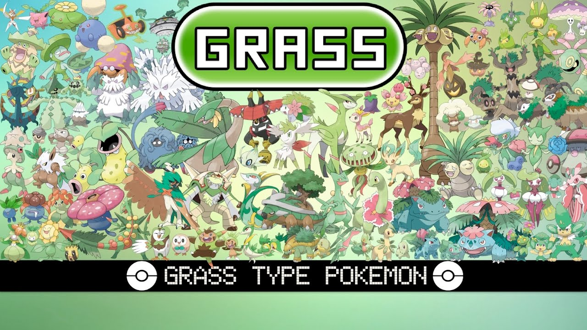

Grass-Type Pokemon
Grass-type Pokémon, with their vibrant green hues and connection to nature, are a cornerstone of the Pokémon world, embodying the beauty and power of plant life. From the iconic Bulbasaur to the majestic Celebi, these creatures thrive in forests, meadows, and jungles, harnessing the energy of sunlight and the earth to flourish in diverse environments. One of the defining features of Grass-type Pokémon is their ability to harness the power of photosynthesis, which grants them formidable strength and resilience. This connection to sunlight allows them to absorb energy and convert it into powerful attacks, such as Solar Beam, Leaf Storm, and Energy Ball, making them formidable adversaries in battle. Additionally, many Grass-type Pokémon possess healing abilities, such as Synthesis and Giga Drain, which enable them to replenish their health and outlast opponents in prolonged battles. Beyond their combat prowess, Grass-type Pokémon play a vital role in maintaining ecological balance within the Pokémon world. Pokémon like Shaymin and Leafeon are revered for their ability to promote plant growth and nurture lush habitats, enriching the environment for both Pokémon and humans alike. Their presence is essential for sustaining ecosystems and preserving biodiversity, highlighting the importance of their conservation. Grass-type Pokémon also exhibit a remarkable diversity of forms and abilities, reflecting the rich tapestry of plant life found in nature. From the graceful Roserade to the towering Torterra, each species boasts unique adaptations and characteristics that make them well-suited to their respective habitats. This diversity extends to their movesets, which encompass a wide array of Grass-type attacks, as well as complementary moves like Poison Jab and Earthquake, allowing Grass-type Pokémon to adapt to various challenges and opponents. Moreover, Grass-type Pokémon hold a special place in the hearts of trainers and fans, who are drawn to their tranquil demeanor, elegant designs, and intrinsic connection to the natural world. Whether they're frolicking in sun-dappled meadows or basking in the shade of ancient forests, these creatures evoke a sense of harmony and serenity that resonates deeply with enthusiasts of all ages. In summary, Grass-type Pokémon are not only formidable battlers and guardians of nature but also symbols of growth, renewal, and vitality. Their presence enriches the Pokémon world, imbuing it with the beauty and resilience of the natural world, and inspiring trainers to cultivate bonds of friendship and stewardship with these magnificent creatures.
